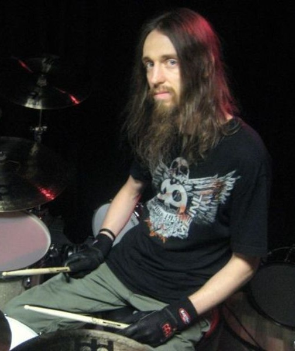

Miembros actuales
Dave Mustaine
David Mustaine nació el 13 de septiembre de 1961 en La Mesa, California, hijo de John y Emily Mustaine.
A fines de la década de 1970, Mustaine comenzó a tocar la guitarra eléctrica, y formó la banda conocida como Panic, que abandonó en 1981, cuando pasaría a ser uno de los miembros iniciales de Metallica. Sus compañeros de Metallica lo expulsaron del grupo debido a su fuerte alcoholismo y uso de drogas, y lo enviaron de regreso a casa en un viaje de cuarenta y ocho horas en autobús, durante el cual tuvo la idea de crear su propia banda. Mientras viajaba, Mustaine leyó en un panfleto político el término megadeath ('megamuerte', unidad de medida equivalente a un millón de muertes humanas empleada en cálculos del ejército estadounidense), y de ahí vino el nombre de este exponente del thrash metal.
Kiko Loureiro
Pedro Henrique «Kiko» Loureiro (Río de Janeiro, 16 de junio de 1972) es un guitarrista brasileño, exmiembro de la banda de Power Metal progresivo Angra y actualmente miembro de Megadeth.
Loureiro comenzó estudiando música y tocando guitarra clásica a los 11 años.
Inspirado en bandas y artistas como Iron Maríaiden, Van Halen, Jimmy Page y Jimi Hendrix, se cambió a la guitarra eléctrica a los 13 años, y a los 16 estaba en dos bandas, "Legalize" y "A Chave", y tocaba en los clubes nocturnos en la ciudad de Sao Paulo. En 1991, con 19 años de edad, se unió a la banda de power metal Angra.
James LoMenzo
James "JLo" LoMenzo (Brooklyn, New York; 13 de enero de 1959) es un músico estadounidense, conocido por haber sido el bajista de White Lion y de banda de thrash metal, Megadeth, hasta el 8 de febrero de 2010, momento en el cual fue reemplazado por el antiguo bajista de la banda David Ellefson, volviendo nuevamente en 2021 para una gira pendiente luego de la expulsión del último. También ha trabajado con otras bandas como Black Label Society.
Dirk Verbeuren
Dirk Verbeuren es un baterista nacido en Wilrijk, Bélgica en 1975. Es muy notable por pertenecer a la banda sueca de death metal melódico Soilwork, a la francesa Scarve, y actualmente a la de thrash metal estadounidense Megadeth.
Debido a su notable habilidad para tocar la batería, ha sido muy solicitado para ser baterista de sesión en muchas bandas, como Devin Townsend Project, Sybreed, Lyzanxia, Sublime Cadaveric Decomposition, Yyrkoon, Manu Livertout, Infinited Hate, 7th Circle, Headline, Taliandorogd y Aborted. También formó parte de la grabación del álbum conmemorativo de los 20 años de la disquera Nuclear Blast Out of the Dark.
Es un miembro permanente de Soilwork (desde 2005) y Scarve (miembro fundador). Él también fue miembro fundador de las bandas Phazm y Mortuary.
Miembros destacados
Dave Ellefson
David Warren Ellefson (Jackson, Minnesota, 12 de noviembre de 1964) es un músico estadounidense, conocido por ser bajista y cofundador de la banda de thrash metal Megadeth, la cual integró desde 1983 hasta 2002, y nuevamente desde 2010 hasta 2021. Tras su salida de Megadeth, Ellefson formó una nueva banda llamada The Lucid.
Ellefson ha coescrito algunos de los éxitos de Megadeth, como «In My Darkest Hour», «Hook in Mouth», «Tornado of Souls», «Foreclosure of a Dream», «High Speed Dirt», «Reckoning Day» y compuso el riff principal de «Dawn Patrol».
Chris Broderick
Christopher Alan Broderick (Lakewood, Colorado, 6 de marzo de 1970) es un guitarrista estadounidense, conocido por haber sido el guitarrista de Megadeth, donde entró sustituyendo a Glen Drover el 13 de enero de 2008. Posteriormente abandonó Megadeth para fundar Act of Defiance con el baterista Shawn Drover también exmiembro de la banda. Anteriormente, había colaborado en álbumes de Nevermore y Jag Panzer.
Nick Menza
Nick Menza (Múnich, 23 de julio de 1964-Los Ángeles, 21 de mayo de 2016) fue un músico estadounidense, conocido por formar parte de la banda de thrash metal Megadeth entre 1989 y 1998.
Hijo del compositor de jazz Don Menza, Nick aprendió música de su padre, directamente en la batería a la muy temprana edad de dos años. Sus influencias eran, sobre todo, del blues. Cuando se hizo mayor de edad empezó su carrera profesional en bandas locales y como baterista de Kelly Rhoads.
Moviéndose por los estilos blues, Funk, Rhythm & Blues, Heavy metal, llegó a Megadeth como técnico de Chuck Behler y, cuando este se fue, ocupó su sitio como batería del grupo, llegando a conformar la mejor época de la banda. En 1998 se va de la banda empezando otros proyectos en solitario.
Shawn Drover
Shawn Drover es un músico conocido por haber pertenecido a la banda de heavy metal Eidolon y por haber sido baterista de Megadeth, grupo en el que también estuvo su hermano, el guitarrista Glen Drover.
Actualmente se desenvuelve como baterista en Act of Defiance, supergrupo de metal extremo fundado por él y el guitarrista también exmiembro de Megadeth Chris Broderick, con Henry Derek (ex-Scar the Martyr) en la voz y Matt Bachand (guitarrista de Shadows Fall) al bajo. Dicha agrupación ya cuenta con dos álbumes de estudio hasta la fecha: Birth and the Burial (lanzado el 21 de agosto de 2015), y Old Scars, New Wounds (29 de septiembre de 2017).
Chris Adler
Christopher James Adler (23. noviembre, 1972) es un baterista norteamericano, más conocido por haber sido integrante del grupo de groove metal Lamb of God1 y haber pertenecido brevemente a la banda de thrash metal Megadeth. Es el hermano mayor de su compañero de banda y guitarrista Willie Adler.
En junio de 2013 entra a formar parte de manera oficial en la banda canadiense Protest the hero. En 2015 es llamado para colaborar con Megadeth tras la salida de Shawn Drover. El 28 de marzo, Megadeth sube a las redes sociales una foto de Chris con la polera del grupo, de esta manera confirmando la integración de Adler a la banda. En julio de 2016, Adler deja de colaborar con Megadeth, dejando el puesto de baterista a Dirk Verbeuren que actualmente es miembro permanente del grupo.